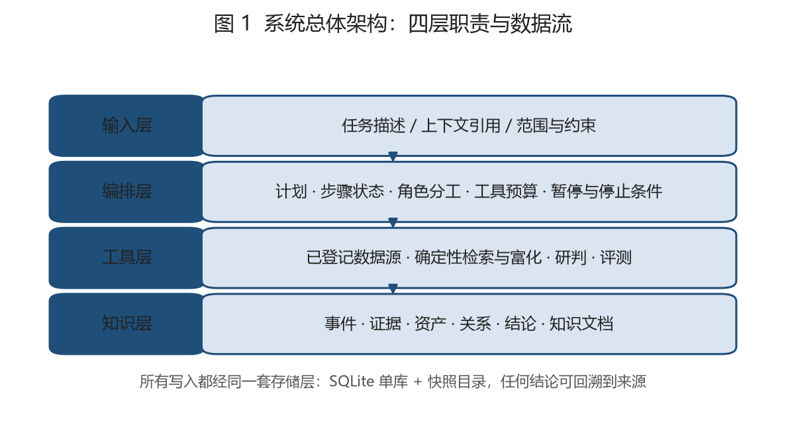
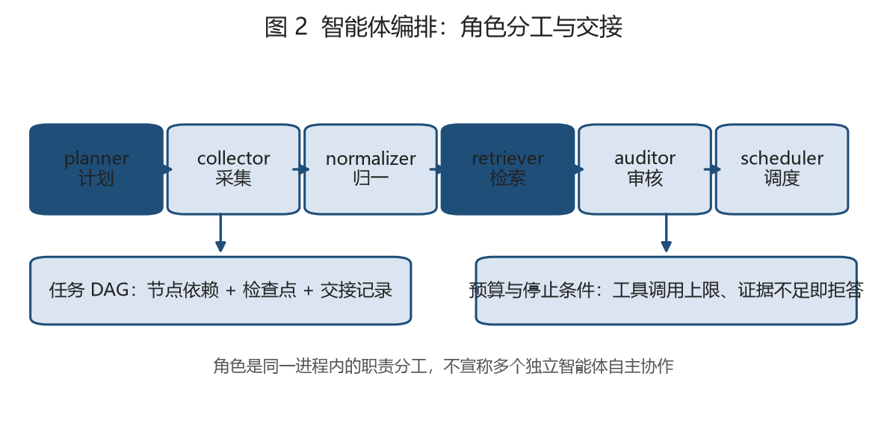
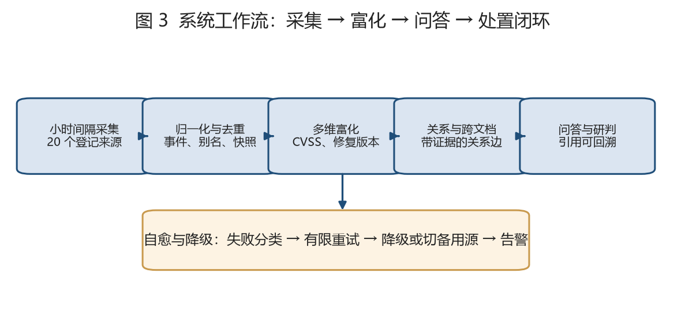
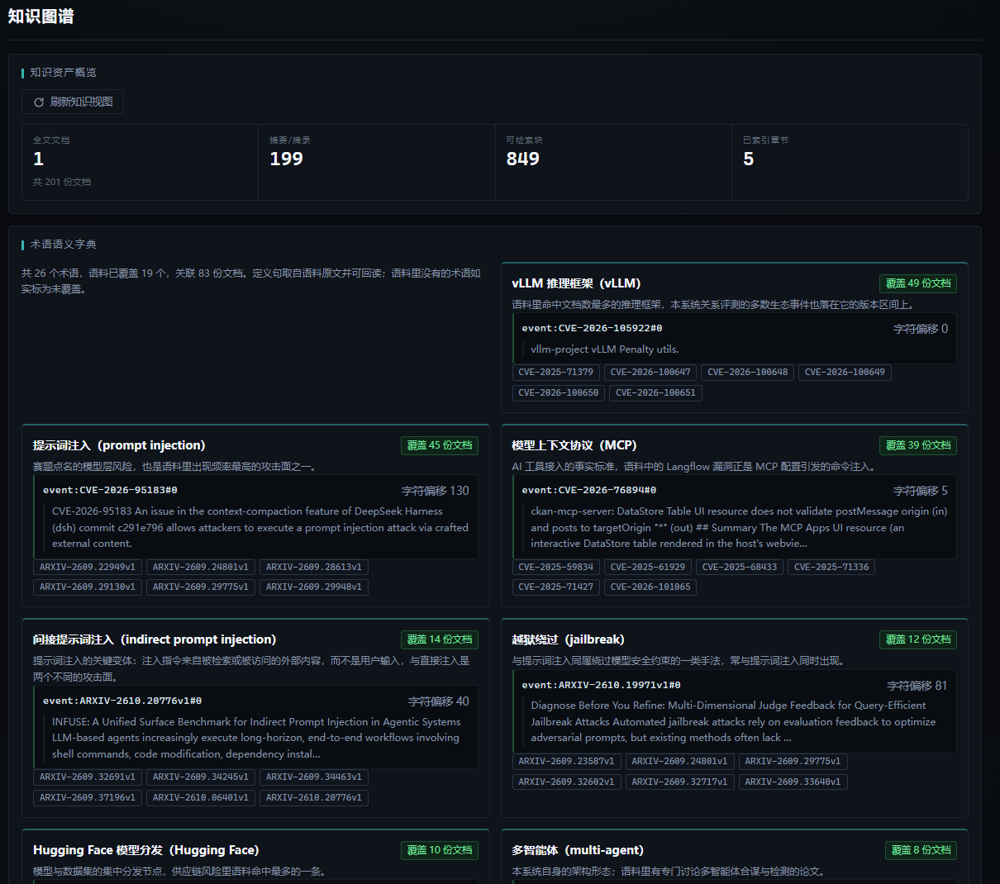
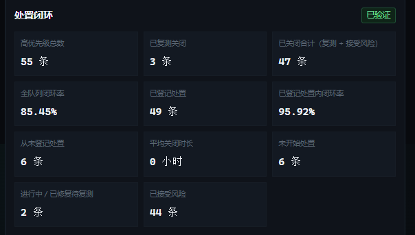
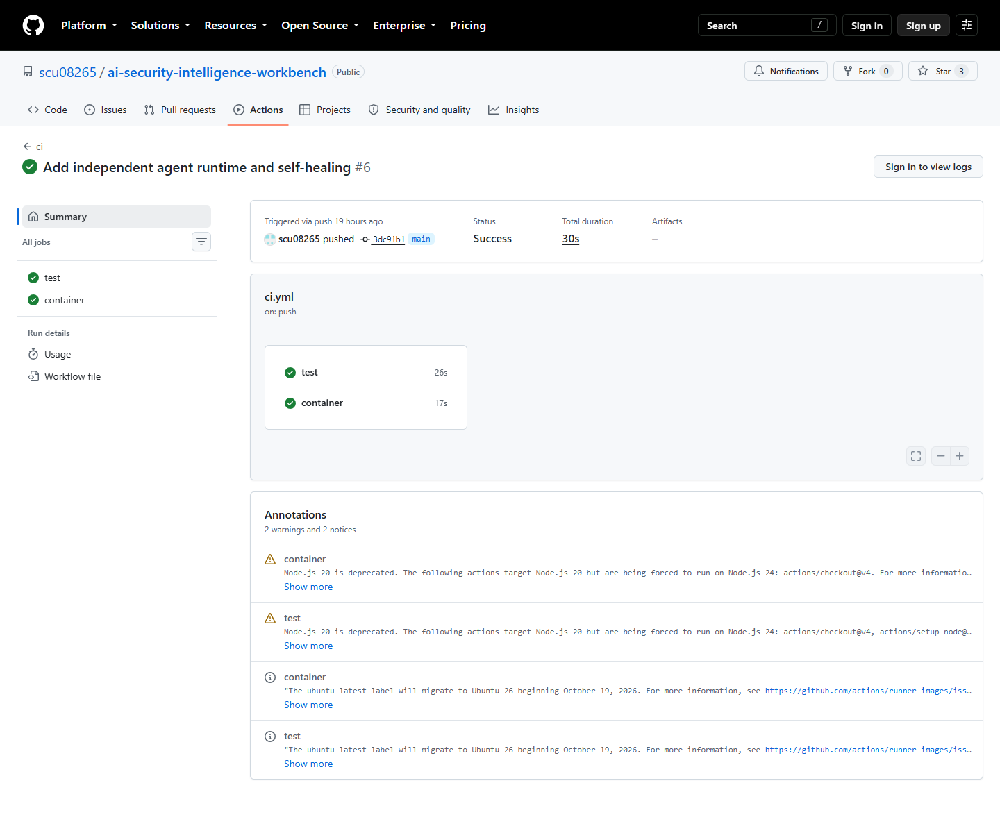

2026 全国大学生 ICT 大赛 · 网信产业应用赛道 · 赛题九
情报监测、知识富化、证据问答与处置闭环的一体化工作台
核心数字
系统总体架构

智能体方案

计划器只能从允许的动作表里选择，看不到凭据，也无法编造来源参数。模型不可用时自动降级为本地证据抽取。
| 角色 | 用模型 | 约束 |
|---|---|---|
| 计划器 | 是 | 受限动作表 |
| 采集 | 否 | 按来源定义抓取 |
| 归一化 | 否 | 确定性字段映射 |
| 检索 | 否 | 打分可复算 |
| 审核 | 否 | 规则标注证据缺口 |
| 调度 | 否 | 计划任务与自愈 |
| 答案组织 | 可选 | 两种模式都必须带引用 |
系统工作流程

情报监测
| 情报类别 | 代表来源 | 来源数 |
|---|---|---|
| 漏洞数据库 | NVD、MITRE CVE、OSV、GitHub Advisory | 4 |
| 在野利用与厂商公告 | CISA KEV、Microsoft MSRC | 2 |
| 学术论文 | arXiv、OpenAlex | 2 |
| 标准与风险框架 | OWASP GenAI、NIST AI RMF | 2 |
| 政策法规 | EU AI Act | 1 |
| 安全博客与社区 | FreeBuf、安全客、Securelist、Talos、补天、NIST News 等 | 9 |
情报时效性
| 口径 | 样本 | 中位延迟 | 6 小时内 | 24 小时内 |
|---|---|---|---|---|
| 漏洞情报 | 244 | 7.34 小时 | 44.7% | 73.8% |
| 混合口径（附录备查） | 336 | 14.43 小时 | 32.4% | 62.5% |
时延只统计系统首次监测之后发布的样本，历史回填的 319 条单独排除。发布时间取自来源自带字段，不做前端估算。
知识富化
| 维度 | 覆盖事件 | 覆盖率 | 说明 |
|---|---|---|---|
| CVSS 评分 | 480 | 68.1% | 漏洞事件携带 CVSS 记录 |
| 论文关联 | 162 | 23.0% | 事件关联到 arXiv 学术来源 |
| 修复版本 | 110 | 15.6% | 受影响区间给出修复版本 |
| POC 记录 | 96 | 13.6% | 事件至少关联一条 POC |
| 资产研判 | 50 | 7.1% | 事件已与授权资产逐条匹配 |
| 带证据关系 | 26 | 3.7% | 关系边携带 evidence_ids 与字符偏移 |
分母是全部 705 条事件。没有证据的维度返回空值并计入缺口，不用估计值补齐。
知识库与检索

分块记录 chunk_id、字符偏移、所属章节与快照哈希。术语字典把术语和原文证据绑定，页面上可以直接跳到命中的文档与字符位置。
证据问答
| 指标 | 实测值 | 口径 |
|---|---|---|
| 文档命中 | 97.22% | 预期文档是否被引用，35 / 36 |
| 要点命中 | 92.11% | 预期术语是否逐字出现，35 / 38 |
| 引用可追溯 | 100% | 引用 ID 能否在库中取回，222 / 222 |
| 拒答一致 | 84% | 与 should_refuse 标签一致，42 / 50 |
| 响应时延 | P50 459 ms | 同一批 50 题，P95 640 ms |
回答格式，句子逐字取自证据，不做改写
答案：结论句 ［文档标题 · chunk-id］
依据原文
“原文句子” ［文档 · chunk-id］
处置闭环

| 处置状态 | 条数 | 含义 |
|---|---|---|
| 已复测关闭 | 3 | 系统复测确认资产已不在受影响区间 |
| 已接受风险 | 44 | 合成演示资产，无真实补丁路径，显式接受 |
| 处置中与待复测 | 2 | 已指派负责人，等待复测 |
| 从未登记 | 6 | vllm 资产，保留真实升级路径 |
闭环率 = 已关闭 / 高优先级总数。接受风险是处置决策，不代表风险已消除。页面把复测关闭、关闭合计与接受风险分三列展示，报告沿用同一口径。
关系与评测
| 指标 | 值 |
|---|---|
| Precision | 1.000 |
| Recall | 0.734 |
| F1 | 0.8466 |
| TP / FP / FN | 69 / 0 / 25 |
| 可判定样本 | 94 条 |
工程化交付
| 能力 | 实现 | 证据 |
|---|---|---|
| 定时采集 | Windows 计划任务每小时触发 | 24 个采集日 |
| 自愈降级 | 连续失败阈值、6 小时冷却、备用源代采 | scheduler_trace |
| 告警 | JSONL 告警、严重度分级、条件恢复判定 | 20 条窗口 |
| 持续集成 | GitHub Actions 三个作业 | 3 / 3 全绿 |
| 容器 | Dockerfile、compose 与健康检查 | 构建通过 |

每次推送自动跑容器构建、回滚验证与全量测试。
创新点
证据优先的答案组织。先给结论句，再附逐字原文与 chunk 编号，引用可以回到字符偏移。
可复算的检索与判定。关键词与同义词扩展打分，人工指标与机器指标分列，不混算。
可审计的处置闭环。处置记录带处置人、版本前后与复测结论，接受风险单独成列。
三级降级链。模型不可用时自动落回本地证据抽取，答案仍然必须带引用，证据不足时同样拒答。
705 条事件、1059 份文档、733 项自动化测试，全部可以在演示机上复跑。